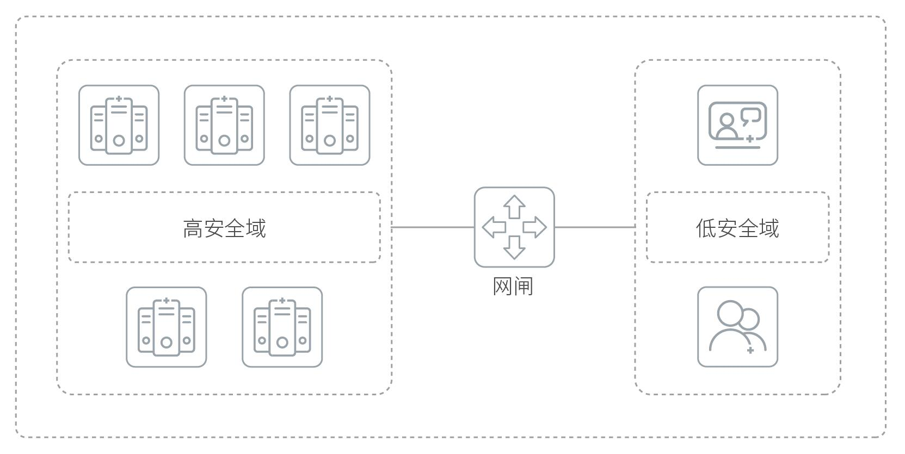

产品概述
赛博特安安全隔离与信息传输系统（NGAP）由内、外网处理单元和安全数据交换单元组成，以独有的“摆渡+代理”技术为核心，内、外网双主机系统+专有安全通道为基础安全架构，为用户构建一套高安全性的软硬件系统。采用专用的安全操作系统，完全剥离TCP/IP协议，各种TCP/IP结构异常的网络攻击不会对安全操作系统造成任何影响。系统可在内外网隔离的情况下，实现可靠、高效的安全数据交换。
应用价值
赛博特安安全隔离与信息传输系统（NGAP）通过带有多种控制功能的固态开关，保证内外网络进行安全数据通信，在保障用户信息系统安全性的同时，最大限度保证用户使用的便捷性。
产品亮点
部署灵活
支持3种工作模式：透明模式、代理模式、路由模式，可适用各种网络环境的变化要求。
双重隔离
支持物理层与网络协议的双重隔离。
应用广泛
支持最全及最常用的应用协议模块，有HTTP/DNS/POP3/SMTP/H323/SQLSERVER/ORA CLE/MYSQL/DB2/SSL 及自定义等多种协议。
安全高效
采用多核多线程运行操作系统及高效的数据定位算法，来保证低延迟，数据的准确性、高效性。专用的安全通道进行内外网信息交换，业务数据通过物理隔离、协议隔离、内容隔离等措施使外网网络数据及有害数据信息无法进入高安全域内。
实时可靠
外网处理单元采用复杂对称多处理（RSNP)技术，在赛博特安安全隔离与信息传输系统内集成多个处理模块，成倍提高处理能力使系统具有很高的性能，系统延迟小于1ms。硬件结构上采用专用网络安全主板设计，进一步提高了设备的可靠性，可在超负荷的环境下长期稳定运行。双机热备的部署可使系统抗灾难性损坏时的可靠性成倍提高。
应用场景
